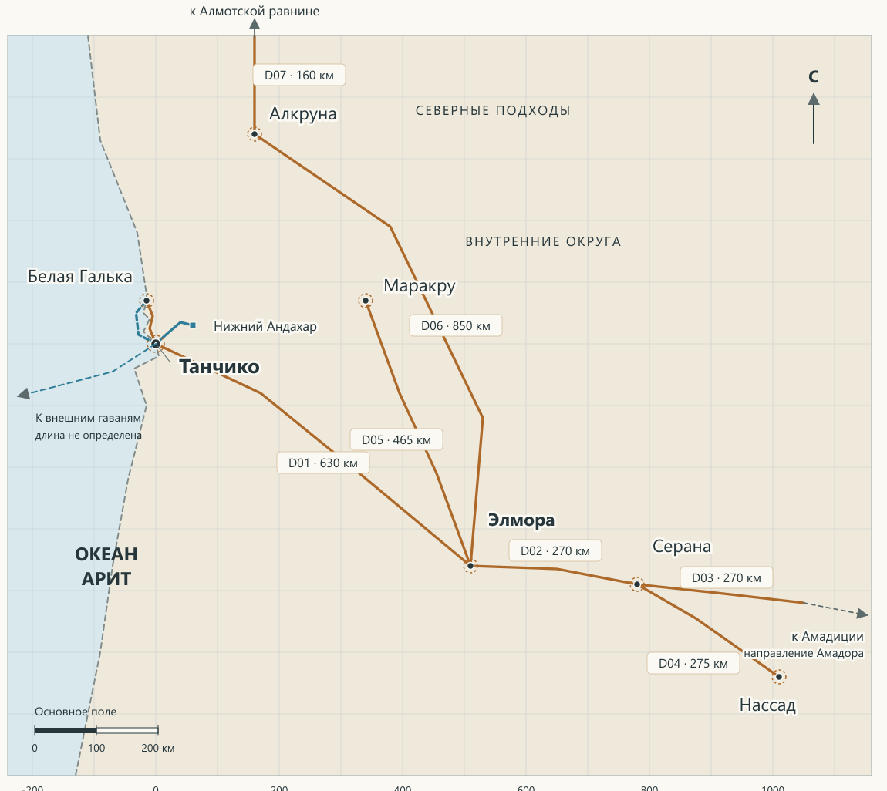
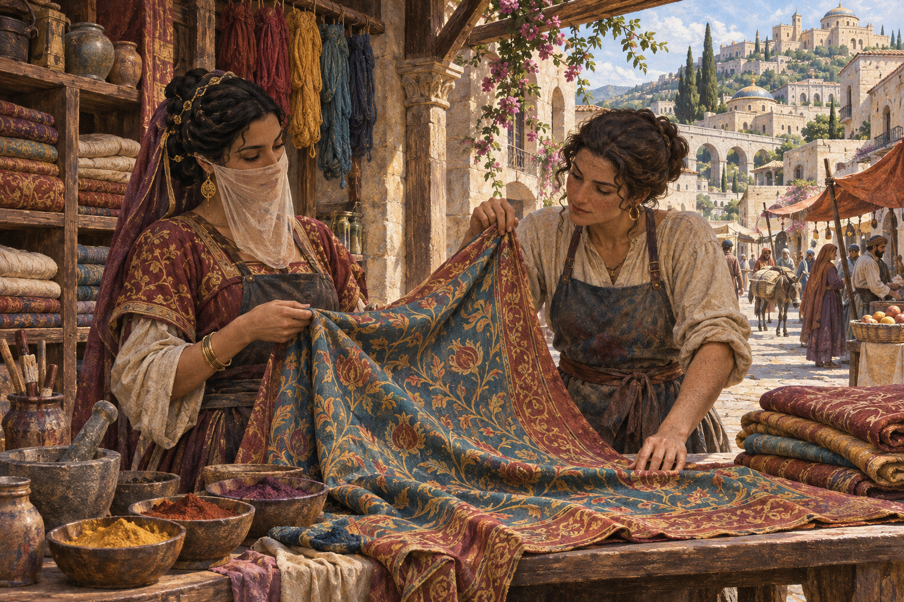
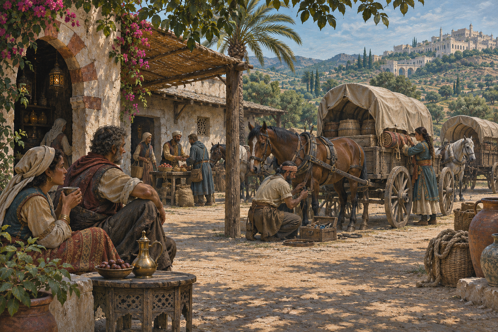
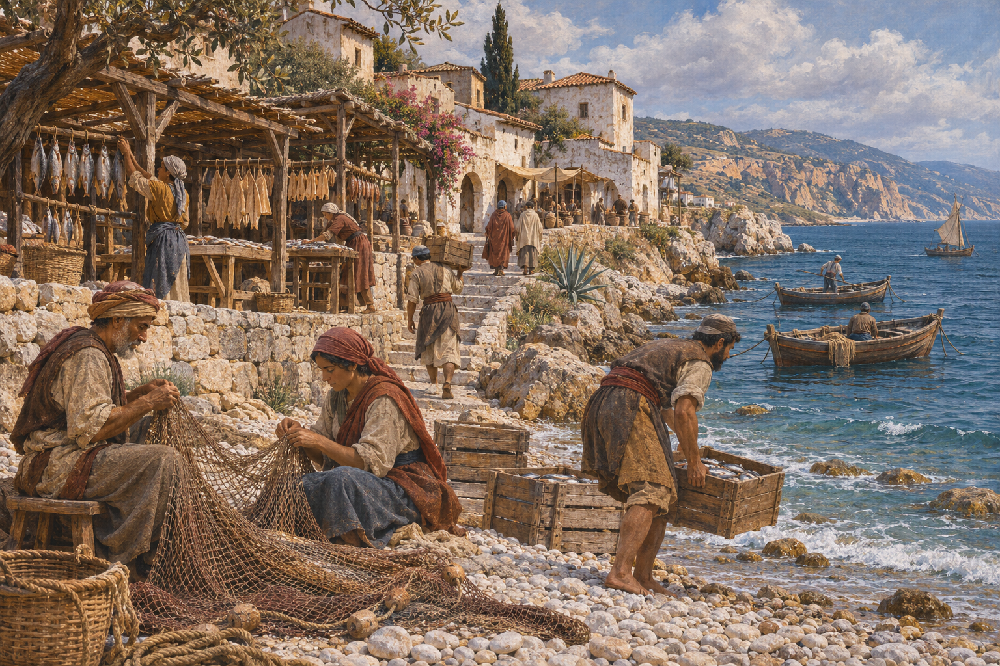
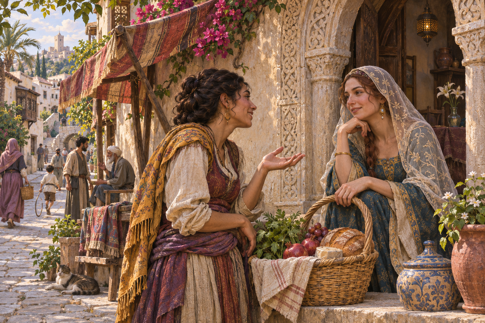

Страна на берегу Арита
Берег и внутренние округа
Тарабон лежит на юго-западе Разломанных Земель у океана Арит. Танчико стоит у устья Андахара. Морская торговля и речная доставка встречаются здесь с дорогами, которые ведут к земледельческим округам и внутренним рынкам.
Столица получает еду, топливо и сырьё несколькими путями. Элмора собирает продукцию округов и распределяет грузы. Маракру связывает ремесленные мастерские с сельскими хозяйствами. Серана обслуживает обозы, Нассад ориентирован на дальнейшие связи с Амадицией, Алкруна — на северные пути, а Белая Галька — на ближнее побережье.
Климат и вода
В приморских округах климат сравнительно мягкий, но сильные ветры и продолжительные дожди осложняют работу на берегу. Груз приходится беречь от сырости, а размокшие дороги затрудняют движение повозок. Во внутренних землях заметнее сезонная сухость: для хозяйства и поездок особенно важны доступ к воде и её запас.
Нижняя долина Андахара соединяет поля, луга и поселения у воды. На пригодных участках работают лодки и мелкосидящие грузовые суда; доставку к берегу и от него продолжают повозки и вьючные животные. Возможность пройти один участок реки не означает, что тем же судном можно добраться до верховьев.
Питьевую воду получают из проверенных источников, колодцев и водных сооружений. Причал удобен для высадки и разгрузки, но наличие причала само по себе не обеспечивает людей и животных чистой водой. Разлив, обмеление или повреждение берега могут изменить привычный путь даже без аномального вмешательства.
Королевство под властью Трона
Тарабон сохраняет собственную корону, Панархат и местные учреждения при верховной власти Хрустального Трона. Повседневное дело часто решается в городе или округе. Внешняя военная безопасность и имперские обязательства относятся к имперской власти.
Чем известна страна
Тарабон ценит искусство, старые вещи и память о тех, кто их сохранил. Приезжий встречает это уважение и в дорогих коллекциях, и в повседневной работе мастера. Вуаль, забота о репутации и внимание к происхождению вещи помогают понять, как здесь строятся знакомства и сделки.
Поселения и пути

Как читать карту
Схема показывает связи между семью поселениями. Край поля карты служит границей изображения. Для поездки важны доступность пути, пересадки и сведения от тех, кто недавно им пользовался.
История и память
Откуда берётся чувство древности
Тарабонцы связывают достоинство своей страны с древностью. Некоторые семьи считают себя потомками знати Эпохи Легенд. Такое предание может многое значить для семьи и её соседей. О происхождении конкретной вещи или рода судят по свидетельствам, которые удалось сохранить.
Завоевание и Последняя Битва
Шончанское завоевание относится к прежней эпохе. В нынешнем Тарабоне его помнят по-разному. Одни семьи говорят прежде всего о принуждении и утрате прав, другие — о том, что помогло пережить перемены, сохранить дом или продолжить работу.
После Последней Битвы жители восстанавливали производство, дома и связи между поселениями. Возможность выполнить обещанное ценилась особенно высоко там, где для одной сделки требовались люди из нескольких мест. Позднее выросла роль складов, перевозчиков, посредников и тех, кто умеет проверить происхождение товара или достоверность сведений о пути.
Тарабон около 285 ПБ
Нынешнее устройство держится на работе короны, Панархата, местных органов и портовых служб. Старые названия, семейные вещи и ремесленные приёмы связывают жителей с прошлым. Современные обязанности и права определяются нынешним порядком страны.
Кто управляет Тарабоном
Корона и Панархат
Корона отвечает за внутреннее управление, распределение общих расходов и координацию местной защиты. Панархат ведает сборами, гражданским судопроизводством и надзором за городскими обязательствами. Представительное собрание участвует в выборе Панарха и согласовании длительных внутренних обязательств.
Хрустальный Трон |
Имперские обязательства, внешняя военная безопасность и имперские объекты. |
|---|---|
Город и округ |
Вода, улицы, рынки, запасы, местная охрана и обычные работы. |
Портовые службы |
Суда, причалы, учёт грузов и движение на набережной. |
Что это значит в обычном деле
Заказ на перевозку, спор об оплате и допуск на охраняемый причал требуют разных решений. Сначала установите, кто отвечает за имущество и на каком основании действует человек, который принимает обращение. Знакомство, печать и должность полезны в пределах конкретного поручения.
Подданство и служба
Принятие Воли
В шестнадцать лет подданный Шончанской Империи обязан пройти Принятие Воли. Ритуал открывает канал. Постоянная передача Воли и эффекты назначенного ранга начинаются после личной присяги конкретному звену.
Местный житель без присяги
Взрослый подданный Тарабона, прошедший Принятие Воли, может жить и работать в рамках своего гражданского положения без личной присяги. Назначение на службу, где такая присяга требуется, ставит перед ним отдельный выбор. Для героя это может быть решение, принятое уже во время игры.
Различия в положении
Происхождение, подданство, должность и ранг Иерархии определяют разные стороны положения человека. Тарабонец может быть имперским подданным и сохранять местную культуру. Шончанское происхождение само по себе не даёт права командовать, задерживать людей или распоряжаться чужим имуществом. Такое полномочие должно следовать из службы и конкретного поручения.
В Тарабоне существуют свободные и несвободные люди; имперское рабство и институт дамане сохраняются. Рабство нельзя понимать как обычный наём на работу. Занятие человека само по себе не позволяет определить его свободу: среди людей, выполняющих сходную работу, могут быть разные правовые статусы. Богатство дома также не означает одинакового достатка и прав всех, кто в нём живёт.
Дамане — женщины, способные направлять и удерживаемые при помощи а’дама. Их положение отличается от положения свободных направляющих. Сул’дам управляет связью с дамане; это отдельная роль. О нынешнем порядке применения Силы и договоре о прекращении захватов рассказано в разделе «Единая Сила в Тарабоне».
Личная присяга конкретному звену Иерархии и гражданское положение также различаются. Взрослый подданный после Принятия Воли может жить и работать без такой присяги в пределах своего статуса. Отсутствие присяги не отменяет местных законов и уже существующих обязанностей.
Дружба и соседство возникают между людьми разного происхождения и положения. Но личная доброта не устраняет неравенства прав. Знакомый служащий может помочь в одном деле и исполнить тяжёлый для соседей приказ в другом; человек может ценить защиту Империи и одновременно опасаться её власти.
ПОСЕЛЕНИЯ ТАРАБОНА
Танчико
Столица Тарабона и главный порт страны на океане Арит
Город на трёх полуостровах
Калпен, Масета и Верана — названия трёх холмистых полуостровов старого городского ядра. Они служат ориентирами с запада на восток. К столице подходят морские суда, речные грузы с нижнего Андахара и сухопутные обозы из внутренних округов.
Еда, топливо и сырьё поступают по нескольким путям. Грузы расходятся по складам, рынкам и мастерским. На этом обмене держится работа людей, которые разгружают суда, хранят товар, снабжают команды или договариваются о следующем участке пути.
Старые места Танчико
До Последней битвы у каждого из трёх полуостровов был свой Круг. На Калпене Великий Круг собирал зрителей на скачки и фейерверки. Ниже него стояли винный дом «Сад серебряных бризов», откуда открывался вид на гавань, и гостиница «Двор трёх слив». На Масете находились Королевский Круг, королевский дворец и Ступени Предателей. На Веране белая стена Панаршего Круга виднелась ниже дворца Панарха. Гавань защищало кольцо крепостей.
Дворец Панарха славился выставочным залом, куда в назначенные дни пускали и простых горожан. Там показывали изделия древних эпох и скелеты зверей, которых никто из современников не видел живыми. Во время смуты зал был разрушен, а часть собрания погибла. В те же годы в другом городском мятеже толпа подожгла Большой зал Собрания, где заседали лорды.
Позднее, когда Шончан захватили Танчико, Иллюминаторы попытались отстоять свой старый Дом. Взрыв разрушил большую часть здания. Уцелевших на месте шончанские власти обратили в да’ковале. К нынешней эпохе Гильдия возродилась как семейное объединение.
Люди столицы
На городских рынках и в мастерских встречаются тарабонцы и шончане. Среди шончан есть приехавшие по службе, частные торговцы и семьи, давно считающие Тарабон своим домом. О человеке здесь многое говорят его работа, знакомства и то, как он исполняет обещания.
ЭНЦИКЛОПЕДИЯ ТАРАБОНА / 285 ПБ
Дела в Танчико
Двор трёх ремёсел
В трёх соседних мастерских режут дерево, расписывают ткань и чинят старые вещи. Под общим навесом можно развернуть ткань, поставить сундук или показать сломанную деталь. Если вещь дорога семье, обсудите с мастером, что важнее сохранить. Это может быть старая отделка, следы долгого пользования или возможность снова пользоваться вещью.
Что сохранилось от старого Танчико
Великий Круг. Часть каменных рядов на Калпене сохранилась, остальные достраивали в разное время. На поле снова устраивают скачки и представления. По старым и новым ступеням видно, как город возвращал арену к жизни. Порядок входа зависит от того, что назначено на этот день.
Старый дворец Панарха. На Веране сохранились наружный двор и часть фасада. С улицы можно увидеть резьбу старых оконных проёмов и более светлые вставки поздних ремонтов. Прежнего выставочного зала больше нет. К стене Панаршего Круга можно подойти со стороны улицы ниже дворца.
Площадь старого Собрания. От сгоревшего Большого зала сохранился каменный порог. Теперь он врезан в мостовую на месте прежнего входа. На площади встречаются перед подъёмом на Калпен и спорят, где проходила стена, за которой заседали лорды.
Двор трёх слив. Гостиница под Великим Кругом работает под прежней вывеской. Верхние этажи перестроены. В Палате падающих лепестков роспись возобновили по старым рисункам, и комнату по-прежнему заказывают для отдельного ужина или разговора.
Сад серебряных бризов. На месте старого винного дома работает новый, с тем же названием и открытой галереей над гаванью. С галереи видны суда и подходы к причалам. За столиками встречаются люди, которым есть что обсудить вдали от шума набережной.
Место старого Дома Иллюминаторов. У улицы стоит уцелевшая часть ограды с памятной надписью о разгроме Дома. Её можно прочитать снаружи. Отсюда в городе начинают рассказ о старой Гильдии и о том, как её ремесло пережило гибель Дома.
Крепости и высокие дома
Крепость Двух огней. Одна из старых гаванских крепостей, которую перестроили и сохранили на службе. Две башни с сигнальными огнями видны с воды. Сообщение об опасности на подходе к гавани можно передать у внешних ворот. На стены и в служебный двор допускают с разрешения.
Крепость Верхнего въезда. Её построили после Последней битвы на сухопутном подходе к столице. У внешней стены есть площадка, где обозы могут остановиться перед спуском в город. У караула можно узнать, открыт ли подход, и сообщить, если на дороге замечены повреждения или опасность.
Дом Девяти окон. Высокий дом знатной семьи на Масете узнают по девяти узким окнам над улицей. В нижнем зале хозяева иногда устраивают показы новой работы рядом с вещами, которые служили ей образцом. В такие дни туда можно прийти по приглашению хозяев или мастера, который выставляется.
Дом Медного флюгера. Высокий дом на подъёме от Калпенских причалов. На крыше над лестницей поворачивается медный кораблик. Внизу принимают посыльных и людей, ищущих заказ или перевозчика, а в верхних комнатах семьи, связанные с морской торговлей, устраивают приёмы для знакомых и деловых гостей.
Ночлег, музей и вид на гавань
Постоялый двор «У двух сходней». Двор для тех, кому нужно переждать между морской и сухопутной частью пути. В общей комнате можно встретить возчиков, матросов и посыльных. Комнату, место для животных и хранение тюков оговаривают отдельно. У хозяев можно спросить, кто недавно пришёл с нужного направления.
Палата городских редкостей. Музей, устроенный после Последней битвы. Здесь показывают старые планы, городскую утварь и рисунки вещей, известных по прежним собраниям. В Галерее резных дверей сохранившиеся створки выставляют рядом с копиями и объясняют, какие детали заменили при ремонте. Часть залов открыта для посетителей. Осмотр вещи вблизи обсуждают с её хранителем.
Лоцманские ступени. Каменная лестница от Калпенской набережной к площадке над гаванью. Отсюда видны крепостные огни и движение судов. Внизу можно встретить людей, которые знают состояние подходов к причалам. При сильном прибое нижнюю часть лестницы закрывают.
Кузницы Танчико
«Три заклёпки». Кузница у сухопутного подъезда к городу. Здесь подковывают лошадей, правят ободья и делают скобы для повозок. За воротами слышно, как мастера простукивают колёса, прежде чем назвать срок ремонта. Сюда полезно зайти до найма нового возчика, если старая повозка ещё нужна для дороги.
«Клёпаный щит». Оружейная кузница, над входом в которую висит щит с рядом крупных заклёпок. Мастера чинят клинки, заменяют кольца в кольчугах и подгоняют детали доспеха по владельцу. Обычную починку обсуждают у прилавка. Для новой вещи мастер снимает мерки и отдельно оговаривает материал и срок.
«Тонкое жало». Небольшая кузница с чистым столом у окна, где проверяют работу после ковки. Здесь делают тонкие свёрла, щипцы, иглы и инструменты для лекарей и реставраторов. Сюда приносят сломанную деталь или рисунок с размерами. Мастер может помочь понять, как деталь изготовили и где она износилась.
Где остановиться в Танчико
«Под тёплой крышей». Недорогая гостиница. Под большим черепичным навесом сушат плащи, а в общей комнате ставят тюфяки вдоль стен. Здесь останавливаются подёнщики, ученики и люди, ожидающие работы в порту. За общим столом легко услышать, где ищут работников и кто недавно вернулся с дороги. За вещами постояльцы следят сами, если отдельно не договорились о хранении.
«Белый фонарь». Гостиница средней руки. У входа горит фонарь из белого стекла, заметный с соседней улицы. Здесь есть отдельные комнаты, общая столовая и небольшой запираемый двор. Хозяева принимают записки для постояльцев и могут подсказать, где найти знакомого им посыльного. Место удобно тем, кто ждёт ответа от заказчика или собирает людей перед отъездом.
«Шёлковый карниз». Дорогая гостиница на Масете. Над окнами верхних комнат тянется резной карниз с узором, похожим на складки ткани. Гостям предлагают отдельные покои и комнаты для приёма посетителей. Здесь можно устроить переговоры, показать заказчику образцы или пригласить переводчика к определённому часу. Порядок приёма гостей и стоимость дополнительных услуг оговаривают при заселении.
Служба, лечение и учёность
Дом имперского наместника. На Веране под имперским знаменем стоят приёмный и жилой корпуса. В передней можно передать письмо по делу, относящемуся к полномочиям Трона, или узнать, кто рассматривает такие обращения. Для личного приёма договариваются заранее. У ворот действует порядок охраняемого объекта, а приёмная отделена от жилых и служебных помещений.
Школа чистой воды. Здесь учат распознавать обычные болезни, ухаживать за больными и выяснять, не связан ли ряд заболеваний с одним колодцем, двором или запасом пищи. При школе есть приёмная, где преподаватели осматривают больных, а ученики помогают под их надзором. Сюда можно принести сведения о том, кто заболел, когда это началось и чем пользовались пострадавшие.
Школа береговых лекарей. В учебном дворе отрабатывают перевязку, помощь при ожогах и переломах, подъём пострадавших с причала и переноску по крутым лестницам. Учатся здесь и те, кто работает на судах и при дорожных обозах. У школы можно узнать, кто из наставников или выпускников берётся сопровождать людей в пути. Помощь направляющего, если она нужна, ищут и согласовывают отдельно.
Палата мер и наблюдений имени Фареде. Учёные, землемеры и мастера приборов ведут здесь записи о приливах, погоде, уровне реки и состоянии путей. В читальном зале можно сверить даты и планы, а в мастерской обсуждают изготовление или ремонт измерительного прибора. Сюда приносят и свежие наблюдения: где изменилось течение, когда просел берег, какие признаки видели до закрытия дороги. В записях различают проверенное измерение, рассказ очевидца и объяснение, которое ещё предстоит проверить.
К кому обратиться
К кому |
По какому делу |
|---|---|
Портовые службы |
Приём судов, причалы, учёт грузов и движение на набережной. |
Городские органы |
Улицы, вода, рынки и местная охрана. |
Панархат |
Сборы, гражданские споры и надзор за городскими обязательствами. |
Об имперской приёмной на Веране рассказано в справке «Дом имперского наместника» в этом разделе.
Если вы приехали
Временный гость может приехать и принять частный заказ без поручителя. Для работы по поручению местной власти или на охраняемом объекте заказчик либо уполномоченный подтверждает цель и пределы задачи. Для плановой открытой работы приезжего направляющего нужен допуск. При непосредственной угрозе жизни он может применить Силу в объёме, необходимом для спасения, а затем сообщает о случившемся местной службе.
Куда ведут дороги
Путь в Элмору связывает столицу с главным внутренним рынком. С Белой Галькой Танчико связывают дорога и прибрежное сообщение. На нижнем Андахаре часть пути можно пройти по воде. Перед отправлением уточните у перевозчика, работает ли нужный участок и где предстоит перегрузка.
ПОСЕЛЕНИЯ ТАРАБОНА
Элмора
Внутренний рынок Тарабона
Элмора лежит на дороге из Танчико в сторону Амадиции. Товары из столицы здесь расходятся по округам, а продукция хозяйств собирается для дальнейшей отправки.
Жизнь поселения
Складские дворы, рынок сельских товаров, работа посредников и мастерские, где чинят колёса и упряжь. Хорошая репутация складывается из исполненных обещаний. На этом рынке покупатель и поставщик часто встречаются снова.
Двор двух весов
Здесь взвешивают и делят партии, сверяют записи и готовят груз к отправке. Уточните, какой вес относится ко всей партии, кто принимает её части и кто подтверждает передачу.
Куда ведут дороги
Танчико связан с Элморой главной внутренней дорогой. Отсюда расходятся пути к Маракру, Алкруне и Серане.
ПОСЕЛЕНИЯ ТАРАБОНА
Маракру
Ремесленный городок внутренних земель
Городок связан с Элморой и окружающими сельскими хозяйствами. Местные мастерские работают для соседей и заказчиков из других мест.

Жизнь поселения
В семейной работе ценят знакомый почерк, но удачная новая отделка тоже находит покупателей. Заказ может зависеть от особого материала, поэтому срок простой работы и срок её отделки стоит обсуждать отдельно.
Солнечный ряд
На открытых прилавках и у мастерских можно рассмотреть образцы, сравнить отделку и договориться о работе. Покажите мастеру саму вещь или подходящий образец и уточните, какой результат нужен.
Куда ведут дороги
Путь к Элморе выводит к крупному внутреннему рынку. Там проще искать дальнейшего перевозчика и покупателя для большой партии.
ПОСЕЛЕНИЯ ТАРАБОНА
Алкруна
Северный торговый посад
Нынешняя Алкруна — повторно освоенное место на северном направлении к Алмотской равнине. Посад поддерживает обмен и работу с путниками.
Жизнь поселения
Здесь ценят участие в общих делах и сведения о том, что происходит на дороге. Люди, недавно вернувшиеся с пути, могут знать его лучше, чем тот, кто привык рассказывать о прежних поездках.
Северный двор
Двор служит местом остановки, обмена дорожными сведениями и работы с припасами. Спросите, когда человек проехал нужный участок, каким способом и что изменилось после его возвращения.
Куда ведут дороги
Дорога к Элморе связывает посад с внутренним рынком. Северное направление ведёт к Алмотской равнине. Для дальнейшей поездки нужны свежие сведения.
ПОСЕЛЕНИЯ ТАРАБОНА
Серана
Дорожный посад перевозчиков
Серана лежит восточнее Элморы на сухопутной дороге. Здесь останавливаются обозы, договариваются о доставке и ищут корм или ремонт.

Жизнь поселения
Постоянные жители знают местные запасы и работу дворов. Проезжающие люди меняются, поэтому устное обещание о ночлеге или ремонте стоит уточнить у того, кто распоряжается местом и работой.
Длинный двор
Жилая сторона обращена к дороге, а хозяйственная часть уходит в глубину. Размещение людей отделено от стоянки животных и ремонта. В общей комнате обсуждают поездки, работу с грузом и попутную доставку.
Куда ведут дороги
На запад путь идёт к Элморе. В сторону Нассада и Амадиции уточняйте доступность участка, наличие корма и состояние упряжи.
ПОСЕЛЕНИЯ ТАРАБОНА
Нассад
Рынок у юго-восточных подходов
Нассад связан с сухопутными путями в сторону Амадиции. Здесь готовят дальнейший проезд, уточняют получателя и выясняют, примут ли груз на другой стороне.
Жизнь поселения
В делах важны точные имена, поручения и смысл письма. Переводчик или писец может помочь передать просьбу. Возможность отправить товар зависит от ответа получателя и условий дальнейшего проезда.
Двор печатей
Под крышей ждут ответа, сверяют записи и упаковывают грузы. Если письмо не пришло, заранее оговорите, где останется партия, кто оплатит ожидание и что делать, если её придётся вернуть.
Куда ведут дороги
Дорога ведёт к Серане и далее к рынкам внутри страны. Для выезда за пределы Тарабона уточняйте открытые переходы и условия приёма.
ПОСЕЛЕНИЯ ТАРАБОНА
Белая Галька
Небольшое приморское поселение
Белая Галька связана с Танчико прибрежной дорогой и водным сообщением. Её повседневность зависит от состояния берега, погоды и доступного подвоза.

Жизнь поселения
Люди работают с уловом и привозными вещами, поддерживают местные перевозки и помогают соседям. Когда берег или погода мешают работе, семье важны собственные запасы и возможность воспользоваться дорогой.
Верхние навесы
На площадках выше обычной полосы береговой воды сушат, складывают и готовят вещи к переносу. Уточните, где можно оставить груз, кто отвечает за него и какой путь сейчас пригоден.
Куда ведут дороги
В Танчико ведёт дорога, а при подходящих условиях возможна прибрежная перевозка. Перед выходом к воде узнайте о погоде, месте высадки и доступе к питьевой воде.
Откуда берутся товары
Рынок, двор и мастерская
Семья хранит припасы для дома. Торговец держит товар для продажи. Мастер может отложить материал для уже взятого заказа, а склад хранит и чужие партии. Поэтому видимый запас товара ещё не говорит о том, что его можно купить.
Как чувствуется перебой
В Танчико задержка подвоза затрагивает дома, мастерские и обслуживание судов. В Элморе задержка покупателя или перевозчика может оставить товар у производителя и связать его деньги. В Маракру мастер иногда может закончить обычную работу и отложить отделку, для которой ждёт конкретный материал.
Семья может заменить привычный товар, мастер — поменять очерёдность заказов, а торговец — разделить партию между получателями. Длительное ожидание особенно тяжело для людей с малым запасом и работников, чей заработок зависит от исполнения заказа.
Что стоит спросить при покупке
Уточните, есть ли вещь в продаже сейчас, кто распоряжается партией и когда её смогут передать. Если нужного товара пока нет, спросите о замене, сроке и том, кто отвечает за доставку.
Дом и повседневная жизнь
Дом, семья и ремесло
Домашний уклад зависит от занятия и средств. Семье мастера нужно место для работы и хранения. Другие делят время между домом и работой у нанимателя. Заботу о младших и больных распределяют по возможностям домашних. Близкие и соседи могут помочь трудом или припасами.
Ребёнок узнаёт занятие семьи, наблюдая за старшими и выполняя посильные поручения. Позже он может учиться у другого мастера. Такой выбор влияет и на хозяйство дома, где нужно заново распределить время и помощь.
Болезнь и помощь
Обычные целители, лекарства, чистая вода и уход остаются важной частью жизни Тарабона. Помощь направляющего зависит от его способностей, доступности и условий работы. Возможность направлять сама по себе ещё не означает умения лечить конкретное повреждение или болезнь.
При болезни или потере заработка семья обращается к близким, соседям и знакомым по работе. Одни могут помочь уходом, другие — припасами или поиском целителя. Такая поддержка зависит от отношений и возможностей людей; общего права на содержание она не создаёт. Для приезжего местные связи особенно полезны, когда нужно найти доступного специалиста.
Обращаясь за помощью, важно объяснить, что случилось с человеком и в каких обстоятельствах. Если он пострадал в необычном месте, собственные наблюдения о воде, воздухе, растительности или происходивших там явлениях могут быть полезны целителю и другим специалистам.
Лечение человека и восстановление повреждённой местности — разные задачи. Уже вылеченная рана не возвращается только потому, что человек вошёл в опасную область. Однако сохраняющееся вредное воздействие способно причинить новое повреждение. Поэтому после помощи пострадавшему может потребоваться также покинуть опасное место или устранить источник угрозы.
О школах лекарей и их работе в столице рассказано в разделе «Дела в Танчико».
Знакомство и доверие
В Танчико человек принадлежит сразу нескольким кругам: семье, соседям, мастерской, службе, торговым связям или обществу ценителей искусства. Имя, известное среди коллекционеров, может ничего не говорить работнику набережной. Знакомство помогает войти в новый круг, но доверие приходится подтверждать.
В Элморе люди часто встречаются вновь по работе и на рынке. Здесь помнят исполненные обещания и прежние совместные дела. Достаток и вкус заметны в добротной одежде, ухоженном доме и удачно выбранной утвари. Расспросы о занятии и знакомых могут быть обычным способом понять приезжего.
В Маракру семейные, соседские и ремесленные связи тесно переплетены. Люди знают, кто сделал вещь и у кого учился мастер. Спор о рисунке ткани способен задеть семейную гордость, а похвала особенно весома, если собеседник объясняет, что именно выполнено хорошо.
В Алкруне ценят участие в нынешней жизни посада: помощь соседям, общие работы и знание местных подходов. Старое название придаёт месту достоинство, но повседневное доверие зависит от поступков человека.
В Серане привыкли быстро устанавливать понятные отношения с проезжающими. Доступность общей комнаты дорожного двора не означает такой же близости с семьёй хозяина. Большой обоз приносит заработок и одновременно увеличивает нагрузку на местные запасы, работников и дворы.
В Нассаде особенно полезно умение объяснить условие и точно передать чужую просьбу. Хороший посредник замечает, когда стороны вкладывают разный смысл в обещание. Такая привычка заметнее среди людей, занятых внешними связями; она не означает, что каждый житель хорошо знает соседние страны.
В Белой Гальке отношения складываются вокруг совместной береговой работы и помощи соседям. Срочная разгрузка может потребовать освободить площадку или отложить собственное дело. Здесь важно знать опыт конкретного человека: привычное спокойствие работника ещё не означает, что он считает сегодняшний выход к воде безопасным.
Эти различия помогают понять первое впечатление от места. В каждом поселении остаются люди с разными вкусами, средствами, занятиями и отношением к власти.
ОБЫЧАИ И ОБЩЕНИЕ
Вуаль и гостеприимство
Лицо и доверие
Полупрозрачную вуаль в Тарабоне носят женщины и мужчины. Показывать лицо на публике считается неприличным; еда и питьё относятся к принятым исключениям. Полное снятие вуали перед близким человеком связано с доверием.
Для приезжего это важная часть местной вежливости. Ткань и качество работы могут говорить о достатке и вкусе владельца. Сама вуаль не означает скрытности или нечестности: закрытое лицо здесь обычно для повседневного общения.
Просьба открыть лицо при признанной проверке личности и попытка унизить человека имеют разный смысл. Важны обстоятельства и полномочия того, кто предъявляет требование.
В гостях
Приглашение к общей еде, разговор о заказе и допуск в домашнюю часть жилища предполагают разную близость. Уважение к личному пространству проявляется в выборе места беседы, времени и круга присутствующих. Хозяин может предложить обсудить дело позднее или в другом месте.
Подарок оценивают в контексте отношений; сам по себе он не создаёт долга. Внимание к человеку может выражаться в готовности выслушать семейную историю, уважении к его работе и бережном обращении с дорогой ему вещью.
Одежда и внешний облик
Среди характерных мужских вещей — цилиндрические колпаки, широкие штаны, свободные рубашки и кафтаны. Женщины носят тонкие платья и часто заплетают волосы в многочисленные косички с бусинами; мужчины нередко отращивают усы.
Материал и исполнение одежды показывают достаток и вкус. Праздничный костюм, одежда мастерской и рабочая одежда набережной служат разным задачам. Эти образы распространены, но не определяют внешность и привычки каждого тарабонца.
Речь
В тарабонской речи встречается привычка завершать утверждение вопросительным «да?». Для передачи местной интонации достаточно употреблять её изредка.
Реплика «У вещи есть история. У продавца тоже, да?» подходит разговору о происхождении предмета. «Его работа новая, а рука хорошая» передаёт уважение к умению даже при непривычном вкусе. Это примеры речи для отыгрыша; конкретный человек может говорить иначе.
Море и вера
Осторожное отношение к морю связано со старым поверьем о глубинах как владениях Тёмного. В одних семьях оно сохраняется, в других уступает опыту моряков или становится предметом спора. Житель порта может уважать семейную традицию и при этом доверять капитану.
Обращения к Свету и Создателю сопровождают память о близких и поиск утешения. Семейные рассказы, песни и сохранённые вещи связывают людей с прошлым. Поверье объясняет человеческое отношение к морю, но само по себе не раскрывает его истинной природы и не определяет безопасность конкретного плавания.
Искусство и наследие
Мастер и заказчик
Искусство видно и в дорогой коллекции, и в вещи для повседневного пользования. Мастера и заказчики спорят о том, что ценнее в конкретной работе. Одни ищут точность старого приёма, другие ценят новизну или качество исполнения.
Что известно о старой вещи
Семейная реликвия, историческая ценность, красивая старая вещь и опасный артефакт могут выглядеть одинаково для неопытного человека. Один предмет способен принадлежать сразу к нескольким из этих категорий. Дорогая семье вещь не обязательно обладает необычными свойствами, а знание её прежних владельцев ещё не объясняет назначения.
Мастер может определить материал, способ изготовления и следы ремонта. Исследователь — сопоставить предмет с известными образцами и свидетельствами. Работа с тер’ангриалом требует соответствующего знания: знаток искусства не получает его только благодаря опыту оценки древностей.
Полезное заключение обозначает свои пределы. Специалист может уверенно говорить о возрасте ткани или поздней замене крепления и при этом ничего не знать об опасных свойствах вещи. Рассказ продавца, семейное предание и результат исследования имеют разные основания. Неизвестное назначение остаётся неизвестным до проверки.
Находка и право на неё
Найденная древность не становится автоматически собственностью нашедшего или государства. У неё может быть владелец, спорная история приобретения или общественная ценность.
Право владеть вещью, показать её специалисту, изменить при ремонте и вывезти из страны — разные вопросы. Согласие на осмотр само по себе не разрешает разбирать предмет, испытывать его действие или передавать другому человеку.
При споре имеют значение обстоятельства находки, документы, свидетели и прежние договорённости. Проверка происхождения и оценка опасности также рассматриваются отдельно: подтверждённый владелец может не знать, что делает принадлежащий ему предмет.
Показ и ремонт
Владелец может показать вещь гостю, пригласить знатока для осмотра или договориться с устроителем публичного показа. Условия зависят от цели встречи и от того, кто отвечает за хранение и возврат. Перед ремонтом полезно решить, что важно сохранить. Это может быть вид предмета, следы его истории или возможность пользоваться им дальше.
Копии и семейная память
Рисунок, списанный текст или новая работа по старому образцу передают рассказ о вещи. Копия может со временем приобрести собственную семейную историю. Если нужно установить происхождение предмета, спросите, что известно об оригинале и кто изготовил или заказал копию.
Праздники и Иллюминаторы
Представление и его зрители
Большой праздник собирает людей ради музыки, огней, встреч и редкого зрелища. Для мастера это возможность показать работу и получить признание, для торговца — время выручки, для семьи — повод увидеть близких и провести время вместе.
За представлением стоит труд Иллюминаторов, музыкантов, грузчиков, продавцов и хозяев площадок. Место зрителей, проходы и порядок доступа имеют значение для безопасности. Пожар или давка могут возникнуть по обычным причинам и требуют помощи независимо от присутствия аномалий.
Наряду с большими праздниками существуют домашние песни, небольшие встречи по семейному поводу и показ законченной работы знакомым. Старую песню могут исполнять по привычке или в память о человеке; бережно починенная вещь сохраняет связь с тем, кому принадлежала. Возможность участвовать зависит от свободного времени, средств и отношений.
Гильдия Иллюминаторов
В Тарабоне действует восстановленная семейная Гильдия Иллюминаторов. Её редкое ремесло связано с огнями и представлениями. Обучение доступно родившимся в семьях Иллюминаторов. Гильдия может заказывать обычную перевозку или охрану, как и другие заказчики.
Как принять участие
Узнайте у устроителя, где можно смотреть представление и на каких условиях туда пускают. Если вы предлагаете работу, обсудите, кто принимает результат и кто отвечает за безопасность места.
Шончане и тарабонцы

Соседство и власть
Среди шончан в Тарабоне есть служащие и их семьи, частные торговцы, работники и люди, давно считающие страну своим домом. Соседство, ученичество и общая работа создают личные связи. Имперская должность и полномочия человека определяются его службой.
Разный опыт
Одни семьи связывают имперское присутствие с принуждением и утратой прав. Другие помнят конкретных людей, которые помогли сохранить дело или защитили соседей. Личная привязанность может сосуществовать с недоверием к имперской власти.
Статус человека особенно заметен там, где кто-то отдаёт приказ, распоряжается имуществом или требует подчинения. Даже знакомые люди могут по-разному понимать смысл обращения и меру учтивости. В конкретном случае важно выяснить, что человек действительно сделал и какие полномочия у него есть.
Соседи Тарабона
Торговые дороги Тарабона ведут к странам с разным устройством власти. На востоке путник встречает самостоятельную Амадицию. На севере его интересы могут пересечься с купеческими домами Арад Домана. Морем открываются другие направления, в том числе Эбу Дар и Фалме.
Амадиция
Амадиция — самостоятельная теократия со столицей в Амадоре. Пастырь истинной веры возглавляет религиозную и гражданскую власть. Земледелие, ремёсла и торговля поддерживают хозяйство. Люди осторожны в выборе тех, к кому обращаются за помощью. Подозрение в неблагонадёжности и риск доноса могут повлиять даже на обычное знакомство.
С тарабонской стороны ориентиры для сухопутной поездки — Серана и Нассад. В Нассаде можно подготовить груз и выяснить, кто его примет дальше. До отправления узнайте о проезде до Амадора и о требованиях к вашему занятию. Для направляющего особенно важны местные условия допуска.
Алтара
Алтара находится под прямым имперским управлением через наместника. Эбу Дар — её главный порт и административный центр. Городские учреждения и гильдии ведают рынками и повседневными работами. Власть Трона здесь устроена иначе, чем в Тарабоне, где действует собственная корона.
Для человека из Танчико Эбу Дар — возможный порт назначения на южном направлении. Если вы едете по заказу, заранее выясните, кто примет груз или работу и какие условия действуют в городе.
Арад Доман
Арад Доман сохраняет самостоятельность. Бандар-Эбан остаётся столицей и торговым центром. Крупные купеческие дома влияют на дела страны через склады, перевозки, кредиты и заказы. Мерадины известны морской торговлей, Саджиты — торговлей специями и тканями.
Северный путь из Тарабона ориентирован на Алкруну и Алмотскую равнину. До поездки в Бандар-Эбан выясните, кто подтвердил состояние дальнейшей дороги. Если выбираете море, уточните назначение судна и условия приёма груза.
Западные гавани
Фалме
Фалме стоит на Томанском мысе у океана Арит. Его гавань известна со времён шончанского Возвращения. К 285 ПБ город стал укреплённым опорным пунктом Империи на материке. Шончанская архитектура заметна в облике города, а укрепления защищают гавань. Из Фалме Империя координирует свои действия на западном побережье.
Имперскую власть в Фалме представляет назначаемый из центра губернатор. Повседневные дела города он ведёт через местную администрацию. Для путешественника из Танчико Фалме — возможный пункт назначения на северном морском направлении. Перед отплытием узнайте, идёт ли туда судно и на каких условиях гавань принимает пассажиров и груз.
Перед поездкой
Направление |
Что уточнить до отправления |
|---|---|
Амадиция |
Проезжий участок от восточных подходов, условия въезда и приём груза. |
Алтара |
Наличие рейса в Эбу Дар и требования к предполагаемой работе. |
Арад Доман |
Состояние северного пути или условия морской доставки в Бандар-Эбан. |
Фалме |
Возможность захода гражданского судна, высадки и разгрузки. |
Профессиональные связи
Морской Народ и другие перевозчики участвуют в морском обмене. Сведения, помощь и работу специалистов можно искать через Единство, Фар Мэддинг, Стражей Узора, Белую и Чёрную Башни. Доступность специалиста и условия работы определяются для конкретного поручения.
БЕЗОПАСНОСТЬ И ПОМОЩЬ
Безопасность и помощь
Обычная жизнь и опасные места
В Тарабоне работают рынки и мастерские, обрабатывают землю, перевозят товары и устраивают праздники. Дома можно отстроить, дорогу — расчистить, заболевшему или раненому — помочь. Однако состояние одного города или участка пути ещё не говорит о положении соседних мест.
На жизнь влияют погода, аварии, насилие и перебои снабжения. Аномальные явления создают дополнительные опасности: могут сделать непригодной воду, нарушить привычное движение или оставить после себя изменённую среду. Поэтому для поездки важны сведения о конкретном участке и времени последнего наблюдения.
Закрытая переправа или задержанный обоз сами по себе не доказывают появления аномалии. Причину нужно выяснить: от неё зависит, достаточно ли дождаться спада воды, отремонтировать путь, найти другую перевозку или обратиться за особой помощью.
Когда опасность закончилась
Сообщение «аномалия закончилась» ещё не означает, что место пригодно для жилья и работы. После её исчезновения могут сохраниться чужая растительность, споры, гнёзда опасных существ или другие изменения среды. Прекращение явления и восстановление его последствий требуют разных действий.
Часть повреждённых мест постепенно восстанавливается. Другим нужна длительная помощь; некоторые остаются устойчивыми шрамами прежнего бедствия. Удачный обход может вернуть поселению снабжение, пока сама повреждённая земля ещё непригодна для использования.
Местные жители и люди, работающие на дороге, могут знать видимые признаки и недавние происшествия. Объяснение причины и оценка способа восстановления требуют соответствующего знания. Отсутствие заметных изменений не всегда подтверждает безопасность.
Кто отвечает за защиту
Гражданская охрана поддерживает порядок в населённых местах. Местные вооружённые силы защищают дороги и территорию. Имперские подразделения выполняют задачи в пределах своего поручения. Полномочия конкретного человека зависят от службы и обстоятельств.
При непосредственной угрозе обращаются к местной охране. Если опасность касается причала, переправы или места работ, сведения важны также для службы, которая за него отвечает. Полезно сообщить, где и когда произошло событие, что вы наблюдали сами, кто пострадал и сохраняется ли угроза.
Высокий ранг Иерархии усиливает его носителя, но не заменяет сведений о происходящем. Даже сильное подразделение должно узнать об опасности, добраться до места и подготовиться к задаче.
Помощь при аномалиях
Стражи Узора умеют досрочно прекращать обычные временные аномалии. Вооружённая охрана, направляющие и другие специалисты могут защищать людей, помогать им покинуть опасное место и выполнять задачи в пределах своих возможностей.
Прибытие Стражей не означает, что все последствия исчезнут вместе с аномалией. Могут потребоваться исследование, лечение пострадавших, восстановление воды и дорог, особое устройство или длительная работа нескольких специалистов.
Помощи добиваются корона, городские органы и общины. Её доступность зависит от сведений, расстояния, ресурсов, условий работы и других угроз, которыми уже заняты исполнители. Влиятельный покровитель способен содействовать обращению, но не гарантирует немедленного прибытия нужных людей.
Цена защиты
Содержание охраны, дорог и запасов требует общих средств. Корона и имперская администрация заинтересованы в исполнении обязательств; города и общины хотят понимать, какая помощь придёт и что останется для местных нужд. Панархат рассматривает основания относящихся к его ведению сборов и исполнение обязательств.
Такие споры затрагивают повседневную жизнь. Средства, направленные на защиту важного пути, могут быть необходимы сразу нескольким поселениям. Чрезмерный сбор способен лишить семью или общину запаса на трудный сезон. Даже люди, согласные с необходимостью защиты, могут расходиться в том, кто должен платить и кому следует помочь первым.
ДОРОГИ И ПЕРЕВОЗКИ
Поездки и перевозки
Как выбрать путь
При доступном маршруте обычные дороги и море остаются самым дешёвым способом перевозки людей и грузов. Выбор зависит от места назначения, груза, состояния пути и того, кто готов выполнить перевозку.
По суше важны вода, корм, места остановки и возможность ремонта. На реке и побережье — подходящее судно, течение, погода, состояние берега и место высадки. Часть поездки может потребовать другого перевозчика: груз нужно выгрузить, сохранить и передать дальше.
Врата и Скольжение доступны по отдельной договорённости при наличии подходящего исполнителя. Деньги сами по себе не гарантируют такую услугу. Для обычного путешествия полезно иметь план, который опирается на подтверждённый способ передвижения.
Расстояния и сроки по суше
Пути между крупными центрами могут занимать недели. Даже при исправной дороге поездка из Танчико в Элмору требует существенно большей подготовки, чем выход в Белую Гальку.
В таблице приведены ориентиры для обычного походного темпа — примерно 39 километров за день при восьми часах движения. Расчёт предполагает пригодную дорогу, допустимую нагрузку, обеспеченность водой и кормом и выход в начале походного дня.
«Дни с движением» включают последний неполный день. Обычный ежедневный отдых уже учтён в походном режиме; ожидание перевозчика, ремонт, перегрузка и дополнительные остановки в эти числа не входят.
Путь |
Расстояние по суше |
Дни с движением при обычном темпе |
|---|---|---|
Танчико — Элмора |
630 км |
17 |
Элмора — Серана |
270 км |
8 |
Серана — Нассад |
275 км |
8 |
Элмора — Маракру |
465 км |
12 |
Элмора — Алкруна |
850 км |
23 |
Танчико — Белая Галька |
75 км |
2 |
Танчико — Элмора — Серана — Нассад |
1 175 км |
31 |
Танчико — Элмора — Алкруна |
1 480 км |
39 |
Расстояния на карте округлены, а сроки рассчитаны по более точным длинам путей. Поэтому пересчёт по одной округлённой подписи иногда даёт небольшое расхождение на последнем дне.
Для составного маршрута считают весь путь, если путешественники могут продолжать движение после промежуточного пункта в тот же день. Складывать округлённые дни отдельных участков не следует. Например, путь из Танчико через Элмору и Серану в Нассад даёт 31 день с движением, а не сумму трёх отдельно округлённых сроков.
Река и побережье
Между Танчико и Белой Галькой прибрежный водный путь составляет около 95 километров. Его срок зависит от судна, погоды, возможности ночного хода и условий высадки. Водная перевозка не обязательно окажется быстрее сухопутной, особенно если предстоит ждать выхода.
На нижнем Андахаре течение влияет на движение в разных направлениях. Срок доставки вниз по реке нельзя переносить на обратную поездку. Для подъёма против течения нужен подходящий способ движения и обеспеченные условия его применения.
До найма судна важно установить, помещаются ли на нём люди, животные и груз, где возможна высадка и кто организует дальнейшую доставку. Наличие лодки ещё не означает возможности перевезти повозку или лошадей.
Подготовка к отправлению
Перед выходом проверьте:
- кто и когда подтвердил состояние нужных участков;
- где доступны питьевая вода, корм, ночлег и ремонт;
- какие люди, животные и вещи входят в договор перевозки;
- кто отвечает за каждый участок и принимает груз после перегрузки;
- когда готовы путешественники, груз и перевозчик;
- где можно остановиться и как стороны поступят при задержке.
Давний рассказ о дороге полезен как ориентир, но не заменяет свежих сведений. Различать обычные повреждения, действующую аномалию и её последствия помогает раздел «Безопасность и помощь».
Когда вы действительно прибудете
Календарный срок включает подготовку, движение, ожидание и необходимые работы в пути. Если на дорогу от Танчико до Элморы приходится 17 дней с движением, а перед выходом пришлось ждать перевозчика полные сутки, получится ориентировочно 18 дней от начала ожидания.
Для пути до Нассада через Элмору и Серану расчёт даёт 31 день с движением. Полные сутки перегрузки без продолжения пути увеличат этот пример до 32 дней. Дальнейший проезд в другую страну и время допуска через её границу считаются отдельно.
Непогода может замедлить движение, отложить выход или сделать участок непроходимым. При закрытом пути сначала выбирают дальнейшее действие: ждать, ремонтировать, менять перевозчика или искать обход. Простое увеличение срока не делает дорогу доступной.
ПРИЕЗД И МЕСТНОЕ ПРАВО
Дела приезжего
Приезд и частная работа
Иностранец может временно приехать в Тарабон и принять частный заказ без поручителя. Приезд и наём сами по себе не делают его имперским подданным и не означают личной присяги Хрустальному Трону. Во время пребывания действуют местные законы.
Для поручения местной власти, работы на охраняемом объекте или другой задачи с отдельным допуском нужен названный заказчик либо уполномоченный, подтверждающий цель и пределы работы. Частный заказ не даёт свободного доступа на охраняемый причал или права действовать от имени города.
Для применения Единой Силы действуют отдельные условия, изложенные в следующем разделе.
Проверка при въезде
При обычной проверке уполномоченный служащий выясняет, кто прибыл, с какой целью и где предполагает остановиться либо куда направляется дальше. Письмо заказчика, сведения принимающей стороны, документы о прежней службе или другие признанные свидетельства могут помочь подтвердить рассказ. Единого обязательного паспорта для каждого путешественника нет.
Отсутствие знакомого в городе само по себе не делает поручителя обязательным. Однако право въехать как временный гость не заменяет отдельного допуска к охраняемому объекту или работе от имени местной власти.
Проверка человека, его груза и условий конкретного поручения может требовать разных сведений. Подтверждение личности не означает автоматического разрешения на ввоз любого товара.
Личное оружие
Свободный гражданский путешественник может въехать с обычным личным оружием и доспехом, если к нему не относится отдельный запрет. Всеобщей обязанности сдавать оружие при входе в каждый город нет.
В населённых местах оружие носят в ножнах, чехле или ином положении, подходящем для переноски, без демонстративной готовности применить его. Угроза оружием и его применение рассматриваются отдельно от самого владения. Наличие меча или лука не даёт права принуждать людей, проводить обыск или выступать от имени охраны.
Для входа на охраняемый объект может действовать особый порядок: ограничение отдельных видов вооружения, временное хранение оружия или допуск только в сопровождении. Условия сообщает отвечающая за вход служба. Если оружие принимают на хранение, владельцу дают подтверждение, позволяющее установить сданные вещи, хранителя и порядок возврата.
Допуск на объект не равен общему праву носить оружие по всей его территории. Если условия входа не подходят путешественнику, он может отказаться от посещения; это само по себе не является основанием для задержания. При наличии отдельного основания для задержания действует соответствующий порядок.
Эти условия относятся к личному вооружению гражданского путешественника. Ввоз партии оружия для продажи, прибытие иностранного военного подразделения и перемещение опасных устройств требуют отдельного рассмотрения. Применение Единой Силы регулируется собственными условиями.
Первые дела в поселении
После прибытия стоит решить, где остановятся люди, куда поставить животных и где оставить груз. Это могут быть разные места. В дорожном дворе размещение, корм, хранение вещей и ремонт нужно обсуждать с теми, кто отвечает за соответствующую услугу.
До договорённости выясните, что именно предоставляют, на какой срок и за какую плату. Возможность переночевать не означает, что найдётся место для всей партии товара или корм для большого обоза. Если вы ожидаете следующего перевозчика, отдельно договоритесь о хранении и о том, кто сможет принять груз в ваше отсутствие.
Для дальнейшей дороги нужны доступная питьевая вода, пища, корм и исправное снаряжение. Часть припасов может предназначаться для уже принятых заказов, поэтому видимый запас не всегда доступен для покупки. При нехватке товара могут помочь замена, разделение закупки или изменение времени отправления.
Посредник, хозяин двора или местный мастер способен подсказать нужного исполнителя в пределах своих знакомств. Рекомендация помогает начать разговор; условия работы подтверждает сам исполнитель. Перед продолжением пути полезно также получить свежие сведения о следующем участке.
К кому обратиться
Споры об оплате, долге, качестве работы и исполнении заказа относятся к гражданским делам. Их рассматривают компетентные органы Панархата. Вопросы воды, улиц, рынков и обычных местных работ начинают решать через городскую или окружную службу. Судами, причалами и движением грузов на набережной занимаются портовые службы.
При насилии, похищении или непосредственной угрозе нужна охрана. Если такое обстоятельство обнаружилось при рассмотрении гражданского спора, соответствующую часть дела передают компетентной службе. Спор об оплате при этом может сохраняться отдельно.
В небольшом поселении один человек способен выполнять несколько служебных функций. Это не даёт ему полномочий по любому вопросу. Владение складом, знание ремесла и право рассматривать гражданский спор также имеют разные основания.
Как изложить дело
Назовите себя, объясните, чего просите и какое событие, имущество или обязательство имеется в виду. Полезны договорённость, запись, свидетель, состояние вещи и сведения о прежнем решении. Если действуете за другого человека, нужно объяснить основание такого обращения.
Отделяйте собственное наблюдение от пересказа. Для сообщения о дороге или опасном месте особенно важны участок, время и источник сведений. Известие о том, что переправа работала неделю назад, не подтверждает её сегодняшнее состояние.
Если положение человека допускает обращение, неграмотность сама по себе не мешает передать просьбу устно. При записи содержание могут прочитать вслух или передать через понятного ему переводчика. Свидетель подтверждает известное ему; это не делает его автоматически представителем заявителя.
Приём обращения ещё не означает признания требования обоснованным. Заявителю сообщают, что принято и куда передано дело: записью, отметкой либо оговорённым устным подтверждением.
Если возник спор
При разбирательстве выясняют, что было обещано, кто принял обязательство, что произошло и какое последствие предусмотрено признанным правом или договором.
Причина неудачи имеет значение. Задержка из-за закрытого участка, поздняя готовность груза и отказ получателя — разные обстоятельства. Возникновение аномалии само по себе не означает, что все участники освобождены от обязательств.
В зависимости от оснований дело может закончиться признанием исполнения, дополнительным сроком, новым соглашением, возвратом полученного или возмещением. Нужный заявителю исход не гарантирован самим фактом обращения.
Временные меры и пересмотр
При опасности или риске порчи имущества иногда требуется мера до окончательного решения: ограничить доступ к месту работ, отдельно хранить спорную партию или перенести приём груза. Значение имеют основание, исполнитель, предел меры и условия её пересмотра.
Название «временная мера» само по себе не даёт права задерживать людей, обыскивать помещения или изымать имущество. Для принуждения требуется относящееся к делу полномочие. Появление вооружённого служащего не превращает частный склад в имперский объект.
При несогласии с гражданским решением можно обращаться за пересмотром через признанный местный порядок к компетентному органу Панархата, если правовой статус заявителя допускает такое обращение. Нужно указать решение, предмет несогласия и новые либо неверно учтённые сведения. Просьба о пересмотре сама по себе не отменяет действующую меру.
Влиятельное знакомство может облегчить приём, но не гарантирует правоты или беспристрастности служащего. Иностранное происхождение участника также не превращает каждый частный спор в дело имперского наместника.
Единая Сила в Тарабоне
Дар и первое публичное проявление
Если местный житель впервые публично проявил дар, служба выясняет обстоятельства и при необходимости приглашает сведущего человека. Житель может остаться дома и выбрать обучение. Для плановой открытой практики нужен допуск. Этот порядок действует для женщин и мужчин.
Допуск к открытой работе
Для планового открытого применения Единой Силы свободный направляющий — местный житель или приезжий — обращается к уполномоченному города или округа. Через обычную местную службу можно узнать, кто рассматривает такие обращения. Для работы на имперском объекте требуется также разрешение службы, отвечающей за этот объект.
При обращении называют исполнителя, объясняют задачу, место и предполагаемый срок. Для лечения, перевозки, обследования или иной работы важно установить, что направляющий умеет делать и чем его действия могут затронуть окружающих.
Свидетельство наставника, прежние выполненные поручения и подтверждение заказчика помогают рассмотрению, но сами по себе не заменяют местного допуска. Если для оценки нужны особые знания, уполномоченный обращается к сведущему специалисту. Опасное показательное применение Силы среди людей не требуется как обычный способ доказать своё умение.
Что разрешает допуск
Допуск определяет разрешённую работу, место, срок и существенные условия её выполнения. Он может относиться к одному поручению либо к повторяющимся работам установленного вида. Например, разрешение на согласованное лечение не даёт права проводить любые опыты или открывать Врата в другом месте.
Условия фиксируют в записи, которую можно предъявить или проверить у выдавшей её службы. Направляющему разъясняют пределы разрешения и условия, которые потребуется согласовать заново при изменении работы.
Гражданский допуск не требует личной присяги конкретному звену Иерархии и сам по себе не означает поступления на службу. Он также не подтверждает, что исполнитель способен решить любую задачу: направляющий отвечает за то, какие возможности он заявил и какие действия действительно выполнил.
Помощь при непосредственной угрозе жизни
Свободный местный или приезжий направляющий может применить Единую Силу без предварительного допуска, когда существует непосредственная угроза жизни. Объём вмешательства должен соответствовать спасению людей. После устранения срочной угрозы дальнейшие плановые работы требуют обычного согласования.
При первой безопасной возможности направляющий сообщает о случившемся местной службе. Если нужный уполномоченный недоступен, сообщение можно передать через местную охрану для дальнейшего направления.
Следует назвать место и время, объяснить угрозу, выполненные действия, известные последствия и то, нужна ли ещё помощь. Сообщение может быть устным с последующей записью. Его подача не требует возвращаться в опасное место ради самого обращения.
Экстренное вмешательство не даёт общего разрешения на последующее применение Силы и не исключает разбора причинённого вреда. При рассмотрении учитывают обстоятельства угрозы и действия направляющего.
Договор и разные порядки
По договору с Белой Башней Шончан обязались прекратить захваты направляющих для обращения в дамане в пределах действия договорной защиты. В Тарабоне действующий порядок защищает свободных направляющих независимо от происхождения, подданства и принадлежности к Башне. Письмо наставника или связь с Айз Седай не являются обязательным условием такой защиты.
Обнаружение дара, отсутствие допуска к открытой практике или нарушение условий работы не дают права принудительно обращать женщину в дамане. Нарушение закона может стать предметом разбирательства, но принудительное обращение в дамане не является допустимым наказанием. Этот запрет действует в Тарабоне для местных и имперских служащих, а также частных лиц.
На материке Шончан сохраняется иной порядок: при обнаружении у женщины дара её обращают в дамане. Привычная для Тарабона защита не должна восприниматься как правило, одинаково действующее во всех землях Империи. Для направляющей поездка на материк Шончан связана с опасностью утраты свободы.
Добровольное решение и положение дамане
Некоторые женщины сами хотят стать дамане. Такое решение возможно и отличается от захвата или принуждения. Запрет принудительного обращения в Тарабоне не означает запрета добровольно принять это положение.
Однако добровольное решение не превращает положение дамане в обычную работу по найму. Женщина оказывается связана а’дамом и подчинена управлению сул’дам. Сам факт добровольного вступления не означает, что она сможет прекратить эту связь и уйти по собственному желанию.
Институт дамане и сул’дам продолжает существовать. Договор о прекращении захватов не означает автоматического освобождения всех уже удерживаемых дамане. Их положение и возможность освобождения рассматриваются отдельно от запрета новых принудительных обращений.
Защита в Тарабоне
При угрозе принудительного обращения можно обращаться к местной охране. Если опасность непосредственная, важно сообщить, где находится женщина, кто ей угрожает и что происходит сейчас. Ссылка на действующий запрет имеет значение для защиты, но не гарантирует немедленного прибытия помощи или добровольного подчинения нарушителя.
Заявление другого человека о том, что женщина якобы согласилась, само по себе не разрешает спор о добровольности. Положение дамане имеет тяжёлые последствия, поэтому желание самой женщины и обстоятельства его выражения существенны для рассмотрения такого случая.
Почему люди реагируют по-разному
Правовая защита не устраняет память о прежних захватах и страх перед а’дамом. Свободная женщина, способная направлять, и её близкие могут опасаться сул’дам или имперской службы даже там, где принуждение запрещено. Другие люди доверяют договору и местным властям либо считают положение дамане приемлемым для себя.
Существование разных порядков усиливает разногласия. Человек, привыкший к обращению направляющих на материке Шончан, может считать его естественным, тогда как в Тарабоне такое требование столкнётся с установленной защитой.
После Последней Битвы стало известно, что мужчины могут безопасно направлять. Однако старые представления сохраняются в части семей и общин. Мужчина способен столкнуться с недоверием даже после полезного поступка.
Отношение к направляющему зависит от его поведения, известных людям последствий работы и прежнего опыта окружающих. Разрешение на практику подтверждает допуск к определённой деятельности; доверие соседей и заказчиков складывается отдельно.
ЗАНЯТИЯ И ВЫБОР
Дела и возможности
Чем могут быть полезны приезжие
Тарабон связывает людей разных занятий: земледельцев, перевозчиков, мастеров, исследователей, служащих и исполнителей праздничных заказов. Их дела требуют не только товара и денег, но и надёжных сведений, защиты, знаний и людей, способных добраться до нужного места.
Работу можно получить через заказчика, посредника, рекомендацию или местное знакомство. Для обычного частного поручения не обязательно состоять в Иерархии. Доверие складывается из понятной договорённости и выполненного дела; происхождение или отсутствие ранга сами по себе не подтверждают надёжности.
Защита и спасение
Общине может понадобиться сопровождение людей, защита дороги или помощь против опасного существа. Пропажа человека, похищение и нападение имеют собственные причины; их связь с аномалией нужно устанавливать по обстоятельствам.
При бедствии полезны те, кто способен вывести пострадавших, найти безопасный подход, доставить сведения или помочь сохранить снабжение. Работа охраны и сильных специалистов не исключает таких задач: помощь может находиться далеко, а действовать иногда требуется до её прибытия.
Исследование и наследие
Старая вещь или здание могут стать предметом исследования, ремонта и спора. Нужно установить происхождение, найти свидетельства, сопоставить рассказы или определить, какие следы прошлого важно сохранить.
Интересы участников различаются. Семья хочет продолжать пользоваться своей вещью, исследователь — изучить её, владелец здания — получить доход, соседи — сохранить привычное место. Поиск решения может потребовать переговоров, проверки сведений и изменения первоначального замысла.
Необычная находка также способна потребовать профильного специалиста. Умение доставить его, обеспечить доступ и сохранить сведения бывает не менее важным, чем собственное знание предмета.
Нарушенные связи и обязательства
Задержанный груз может оставить мастерскую без материала, а поселение — без нужного подвоза. Задача состоит в выяснении причины и поиске выполнимого решения: восстановить участок, договориться о другой перевозке, найти получателя или помочь сторонам пересмотреть условия.
В ремесле и искусстве возникают споры об авторстве, оплате и праве показывать работу. Участие в таком деле затрагивает заработок и репутацию людей. Обнаруженная подделка или неисполненное обещание требуют разобраться в действиях конкретных участников.
Собственные цели
Персонажи могут искать знания, защищать близких, помогать общине, выполнять оплаченный заказ или добиваться справедливого решения. Их цели не обязаны совпадать с интересами всех заказчиков и властей.
Частное поручение не даёт права задерживать людей, изымать имущество или выступать от имени города. Доступ на охраняемые объекты и применение Единой Силы требуют соответствующих оснований, описанных в этой книге.
Успех может выражаться в спасённых людях, восстановленном сообщении, сохранённой вещи или разрешённом споре. Такие результаты имеют значение для страны и её жителей даже тогда, когда не устраняют большую угрозу миру.
Персонаж из Тарабона
Выберите место и занятие
Портовый работник из Танчико, мастер из Маракру и перевозчик из Сераны будут по-разному знать страну. Выберите место, где герой провёл значительную часть жизни, занятие, которому научился, и круг людей, которым знакома его работа. Затем обсудите с Мастером, что привело героя в партию.
Имена
Среди мужских имён встречаются Андрик, Андрол, Перал, Таммуз, Варил. Среди женских — Аледрин, Бэрнейл, Кериндра, Колларис, Мерис, Сэлиндрин.
Национальные особенности
Мудрость увеличивается на 2. Черта «Замаскированный» даёт преимущество на проверки Харизмы (Убеждение) и Харизмы (Обман), пока персонаж носит вуаль.
Старт кампании
Взрослый тарабонский подданный после Принятия Воли может начать игру без личной присяги, ранга, ранговых эффектов и постоянной передачи Воли. Если персонаж направляет или выбирает службу, заранее обсудите с Мастером его обучение, гражданское положение и применимые условия допуска.
Словарь и справка
Панархат |
Гражданский институт Тарабона. Ведает сборами, гражданским судом и надзором за городскими обязательствами. |
|---|---|
Хрустальный Трон |
Имперская власть и Иерархия, с которой связаны Принятие Воли, присяга и ранги. |
Принятие Воли |
Обязательный для подданных ритуал в шестнадцать лет. Открывает канал для передачи Воли. |
Личная присяга |
Связь с конкретным звеном. После присяги действуют эффекты назначенного ранга. |
Дамане |
Женщина, способная направлять и удерживаемая при помощи а’дама. |
Сул’дам |
Держательница наруча а’дама, управляющая связью с дамане. |
285 ПБ |
Ориентир времени книги. ПБ означает годы после Последней Битвы. |
Сведения об издании
Лор основан на энциклопедии Тарабона v1.22. Правила происхождения сверены со сводом v3_15, а описание Принятия Воли и личной присяги — с профилем Хрустального Трона v1.2. Изображение города представляет художественный образ. Карта основана на принятой модели поселений и путей Тарабона. Сведения о соседях и Фалме следуют принятым очеркам кампании на 285 ПБ. Рабочая редакция v4. 4 ноября 2026 года.